Krypto und Geld, praxisnah
سواد مالی و کریپتو، کاربردیWie Blockchains funktionieren, wie man einen Token prüft, bevor man ihn anfasst, und wie man sich vor Betrug schützt.
 تصویرسازی
تصویرسازی
با هم، از بازار و کریپتو تا نوآوری و دستاوردهای ایرانیان را دنبال میکنیم.


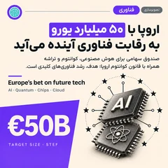
Ein Fonds mit einem Ziel von bis zu 50 Milliarden Euro für KI, Quanten und Chips, dazu ein Quantengesetz. Wie er im Vergleich dasteht, wer profitiert und wo in Europa er am besten wirkt.
صندوق STEF و قانون کوانتوم: مقایسه با برنامههای قبلی، ذینفعان و مناطقی که بیشتر میبرند.
Die Geschichte lesen

Ein Gesetzentwurf, der rund 306.800 staatliche BTC für 20 Jahre sperrt, erreicht das Plenum des Repräsentantenhauses. Gekauft wird nichts, und die Zeit ist knapp.
طرح قفل ۲۰ سالهی حدود ۳۰۶ هزار بیتکوین دولت آمریکا به صحن رسید؛ خریدی در آن نیست و وقت کم است.
Die Geschichte lesen

Babak Zanjanis Coin startet am 30. November in den Handel. Sanktionen, keine inländische Lizenz und dünne Liquidität: Ist das machbar, glaubwürdig und handelbar?
معاملات از ۹ آذر؛ تحریم، نبود مجوز و نقدینگی کم. شدنی است، اعتبار دارد و کجا معامله میشود؟
Die Geschichte lesen

Digitale Dienstleistungen machen 56 % der weltweiten Dienstleistungsexporte aus. Welche Bereiche zahlen, wo man Kunden findet, wie das Geld tatsächlich ankommt und wie realistisch das alles ist.
بازار، ۱۶ حوزه، مشترییابی، اینترنت، تحریمها و راههای دریافت پول؛ و اینکه چقدر واقعی است.
Die Geschichte lesen

Eine KI-Entlassungswelle gibt es bisher nicht, aber Aufgaben und der Einstieg für Neulinge verändern sich. Was die Belege dieses Jahres sagen und wie man den Wandel liest.
اخراج گستردهای نیست، ولی وظیفهها و راه ورود تازهکارها عوض میشود. شواهد امسال و راه درست فهمیدن تغییر.
Die Geschichte lesen

„Finanzministerium gehackt“ ging viral. FinCEN sagt, der unbefugte Zugriff habe einen begrenzten Teil seiner Systeme erreicht. Was bestätigt ist, was nicht, und wie man solche Schlagzeilen liest.
«خزانهداری هک شد» وایرال شد. FinCEN از دسترسی غیرمجاز به بخش محدودی از سامانههایش میگوید. چه چیزی تأیید شده و چه چیزی نه؟
Die Geschichte lesen

Bitcoin ist wieder unter 60.000 Dollar, ETFs verlieren Geld und die Angst steht bei 11. Drei Szenarien für die kommende Woche und der eine Bericht, der zählt.
بیتکوین دوباره زیر ۶۰ هزار دلار است، ETFها پول از دست میدهند و ترس روی ۱۱ است. سه سناریو برای هفتهی آینده.
Die Geschichte lesen
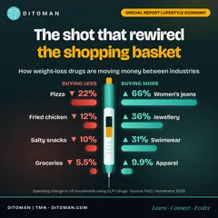
Abnehmmedikamente verlagern Geld von Snacks und Pizza zu Protein, Kleidung und Gesundheit. Wie groß ist der Schaden, wo sind die neuen Märkte und wo steht Iran?
داروهای لاغری پول را از چیپس و پیتزا به پروتئین، پوشاک و سلامت میبرند. آسیب چقدر است، بازار تازه کجاست و ایران کجا ایستاده؟
Die Geschichte lesen

Circle und Paribu unterzeichnen eine Absichtserklärung: wie der digitale Dollar funktioniert, die Lehre der Türkei aus 85 % Inflation, wo der Iran steht und die kommenden Jobs.
تفاهمنامهی Circle و Paribu: سازوکار دلار دیجیتال، درس ترکیه از تورم ۸۵ درصدی، جایگاه ایران و فرصتهای شغلی.
Die Geschichte lesen

Das Knochengerüst aus Magnesium und Graphenoxid der Universität Arak: Laborergebnisse, wie Deutschland und Korea auf den Markt kamen, Irans 5. Platz auf dem Gebiet und der Weg in den OP.
داربست منیزیم و گرافن اکسید دانشگاه اراک: نتایج آزمایشگاهی، تجربهی آلمان و کره، رتبهی پنجم ایران و راه تا اتاق عمل.
Die Geschichte lesen

Ein sehr starker El Niño zusätzlich zur langfristigen Erwärmung könnte 2027 zum Rekordjahr machen. Was das für Lebensmittelpreise, Strom, Wasser und den Iran bedeutet.
النینوی بسیار قوی روی گرمایش بلندمدت ممکن است ۲۰۲۷ را سال رکورد کند. اثرش بر قیمت غذا، برق، آب و ایران.
Die Geschichte lesen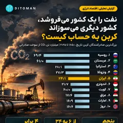

Russland, Saudi-Arabien und Australien sind die größten CO2-Exporteure der Geschichte; Iran liegt auf Platz fünf. Das Geld, die Jobs, das Recht und warum die heutigen Klimaregeln das kaum erfassen.
روسیه، عربستان و استرالیا بزرگترین صادرکنندگان کربن تاریخاند و ایران پنجم. پول، شغل، قانون و اینکه چرا قوانین فعلی تقریباً آن را حساب نمیکنند.
Die Geschichte lesen

Wie digitale Schecks funktionieren, der Fahrplan der Zentralbank zu 80 % elektronischem Anteil, Lehren aus Hongkong, Singapur, Indien und Großbritannien und wie man sie sicher nutzt.
چک دیجیتال چطور کار میکند، نقشهی راه بانک مرکزی تا سهم ۸۰ درصدی، تجربهی هنگکنگ، سنگاپور، هند و بریتانیا و راهنمای استفادهی امن.
Die Geschichte lesen

Vom ersten 6,6-kW-Kraftwerk in Maschhad zu 396 TWh im Jahr: Geschichte, Kapazität, Netz, Sanktionen, Umwelt, Zukunft und 40 Jahre im Vergleich mit 15 Nachbarn.
از نیروگاه ۶٫۶ کیلوواتی مشهد تا ۳۹۶ میلیارد کیلوواتساعت: تاریخچه، ظرفیت، شبکه، تحریم، محیط زیست، آینده و مقایسه با ۱۵ همسایه.
Die Geschichte lesen

Ein Sicherheitstest-Werkzeug, das bei echten Angriffen auf südkoreanische Banken eingesetzt wurde: was FBI, CrowdStrike und Check Point bestätigt haben, was noch unbewiesen ist und was zu tun ist.
ابزار آزمایش امنیت که در حملهی واقعی به بانکهای کره به کار رفت: آنچه FBI و CrowdStrike تأیید کردهاند، آنچه هنوز ثابت نشده و چه باید کرد.
Die Geschichte lesen

Ein Land, das 95 % seines Gases importiert, plant Kraftwerksschiffe, LNG und einen Stromkorridor. Die Zahlen, wer gewinnt, wer sich sorgt und was noch unbewiesen ist.
کشوری که ۹۵٪ گازش وارداتی است، با نیروگاه شناور، LNG و کریدور برق میخواهد هاب شود. ارقام، برندگان، نگرانیها و آنچه هنوز ثابت نشده.
Die Geschichte lesen

China vor 40 Jahren, vor 20 Jahren und heute: 3,4 Billionen Dollar im Ausland investiert, 168 Häfen in 90 Ländern, Kredite, Know-how und der Vergleich mit Großbritannien, Frankreich, den USA und Japan.
چین ۴۰ سال پیش، ۲۰ سال پیش و امروز: ۳٫۴ تریلیون دلار سرمایهگذاری خارجی، ۱۶۸ بندر در ۹۰ کشور، وام، مهارت و مقایسه با بریتانیا، فرانسه، آمریکا و ژاپن.
Die Geschichte lesen

Zehn große iranische Online-Medien im Vergleich: Geschichte, Geld, Publikum, das nationale Netz während der Abschaltung, KI und Leser im Ausland.
ده رسانه از نُه زاویه: تاریخچه، پول، مخاطب، شبکهی ملی در روزهای قطع اینترنت، هوش مصنوعی و خوانندهی خارج از ایران.
Die Geschichte lesen

Warum Krypto mit Tech-Aktien und Gold fiel: die Fed, KI-Aktien, ETF-Abflüsse und Geopolitik, mit Szenarien für eine Woche, vier Wochen und sechs Monate.
چرا کریپتو همزمان با سهام فناوری و طلا ریخت؛ با سناریوهای مثبت و منفی برای یک هفته، چهار هفته و شش ماه.
Die Geschichte lesen

Daniel Chidiac über Grübeln, Grenzen und Selbstsabotage, und warum ein Abstand zwischen Ereignis und Reaktion bei Geldentscheidungen zählt.
کتاب دنیل چیدیاک دربارهی بیشفکری، مرزبندی و خودتخریبی؛ و اینکه چرا فاصلهی بین اتفاق و واکنش در پول هم مهم است.
Die Geschichte lesen

Peter Zeihans Buch von 2016 über Schiefergas und eine Welt ohne Amerika als Weltpolizist, mit einer Bilanz seiner Prognosen.
کتاب پیتر زایهان دربارهی انقلاب شیل و جهانی بدون پلیس آمریکا، با کارنامهی پیشبینیهایش تا امروز.
Die Geschichte lesen

Wo Iraner leben und warum: ein Jahrhundert Bevölkerungskarte, Wasser, Infrastruktur und die nächsten 20 Jahre.
مردم ایران کجا زندگی میکنند و چرا: صد سال نقشهی جمعیت، نقش آب، زیرساختها و ۲۰ سال آینده.
Die Geschichte lesen

Ein von einem Nobelpreisträger geleitetes Gremium stützt OpenAIs Yang-Mills-Existenzbeweis; die Massenlücke und der Preis von 1 Million Dollar bleiben offen.
تأیید اثبات هوش مصنوعی برای وجود نظریهی یانگ–میلز؛ شکاف جرمی و جایزهی یک میلیون دلاری هنوز باز است.
Die Geschichte lesen

Der Google–Quaise-Deal zu superheißer Geothermie, ein Jahrhundert Geschichte, führende Länder, der Markt und Irans Potenzial.
قرارداد گوگل و Quaise، فناوری زمینگرمایی فوقداغ، تاریخچه، بازار و ظرفیت ایران از مشکینشهر تا دماوند.
Die Geschichte lesen

Was die VAE testen, wo es im Iran passt, wie es den Boden schützt und welche iranischen Unternehmen es schon tun.
آزمایشهای امارات، کاربرد در مناطق خشک ایران، حفاظت از خاک و شرکتهای ایرانی فعال در کشت هوشمند.
Die Geschichte lesen

Micron, SK hynix, AMD, Arista und Marvell: offizielle Zahlen, Eigentümerstruktur, der Ausstieg von Jensen Huang und Szenarien bis 2030.
مایکرون، اسکی هاینیکس، AMD، آریستا و مارول: ارقام رسمی به دلار و تومان، مالکیت، کنارهگیری جنسن هوانگ و سناریوها.
Die Geschichte lesen

Industrie gegen Märkte: Verwendung, das Defizit, Rekord und Absturz 2026, Gold und andere Metalle und der Ausblick.
صنعت در برابر بازار: کاربردها، کسری بازار، رکورد و سقوط ۲۰۲۶، مقایسه با طلا و چشمانداز آینده.
Die Geschichte lesen

Von Teheran 1943 und Jalta bis Shenzhen: Geschichte, Atomfrage, politische, wirtschaftliche und zivilisatorische Interessen, der Iran und die kommenden Szenarien.
از تهران ۱۹۴۳ و یالتا تا شنژن: تاریخ، ابعاد هستهای، سیاسی، اقتصادی و تمدنی، جایگاه ایران و سناریوهای پیش رو.
Die Geschichte lesen

Wie Goldpulver hergestellt wird, die Maschinen und ihre Preise, die Schmuckwirtschaft im Iran und die Idee umgestaltbaren Goldes.
پودر طلا چطور ساخته میشود، دستگاهها و قیمتها، اقتصاد جواهر در ایران و ایدهی طلای قابلبازطراحی.
Die Geschichte lesen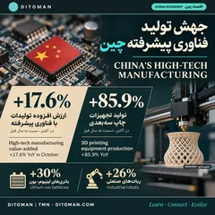
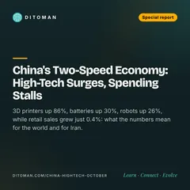
3D-Drucker +86 %, Batterien +30 %, Roboter +26 %, während der Einzelhandel nur um 0,4 % wuchs: was das für die Welt und den Iran bedeutet.
چاپگر سهبعدی ۸۶٪، باتری ۳۰٪، ربات ۲۶٪؛ در حالی که خردهفروشی فقط ۰٫۴٪ رشد کرد.
Die Geschichte lesen

Ein Batteriebindemittel aus Pflanzen und Wasser: der Markt, Emissionen, Gesundheit, Preise, neue Geschäfte und die Chance für den Iran.
چسب باتری از گیاه و آب: بازار، گازهای گلخانهای، سلامت، قیمت، کسبوکارهای تازه و فرصت ایران.
Die Geschichte lesen

Spiegel im Orbit, die Energierechnung, Flächenbedarf, die Sorge der Astronomen und vier Zukunftsszenarien.
آینههای فضایی، حساب انرژی، کاربری زمین، نگرانی اخترشناسان و چهار سناریو برای آینده.
Die Geschichte lesen

Was geschah, wer betroffen war, warum die Wiederherstellung so lange dauerte, Betrugswarnungen und wie Unternehmen weniger angreifbar werden.
چه اتفاقی افتاد، چه کسانی آسیب دیدند، چرا بازیابی طول کشید، هشدار کلاهبرداری و درسها برای کسبوکارها.
Die Geschichte lesen

Auracast in Frankfurt, München und Brighton, der Weltmarkt, KI, die Unternehmen, die Standards und die Chance für den Iran.
Auracast در فرانکفورت، مونیخ و برایتون، بازار جهانی، هوش مصنوعی، شرکتها، استانداردها و فرصت صنعت صوت ایران.
Die Geschichte lesen

Liquidationen, Hebel, fünf Ursachen, ein Einjahresvergleich, drei Szenarien und was das für iranische Anleger bedeutet.
لیکوئیدیشن و اهرم، پنج دلیل سقوط، مقایسه با یک سال پیش، سه سناریوی آینده و اثر بر سرمایهگذار ایرانی.
Die Geschichte lesen

Wie KI die Kosten einer kleinen Firmengründung im Iran senkt: Marketing, Inhalte, Buchhaltung, Recht, Papierkram, Kundenservice und Export, mit einem 30-Tage-Plan.
هوش مصنوعی در بازاریابی، محتوا، حسابداری، امور حقوقی، مدارک، خدمات مشتری و صادرات؛ با حسابوکتاب واقعی و برنامهی ۳۰ روزه.
Die Geschichte lesen

21 globale Banken sagen dem Projekt Faro rund 270 Mio. Dollar zu: die Geschichte, der 295-Mrd.-Markt, Fintech, Blockchain und was es für den Iran bedeutet.
۲۱ بانک بزرگ جهان با حدود ۲۷۰ میلیون دلار وارد بازار استیبلکوین شدند: تاریخچه، بازار ۲۹۵ میلیارد دلاری، فینتک، بلاکچین و معنای آن برای ایران.
Die Geschichte lesen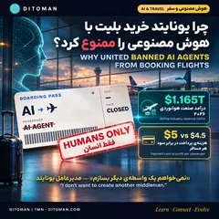
United verbot KI-Agenten den Ticketkauf: die offiziellen Gründe, das „kein neuer Mittelsmann“ des CEO, das Geld in einer 1,165-Billionen-Dollar-Branche und was das für Iran bedeutet.
یونایتد خرید بلیت با هوش مصنوعی را ممنوع کرد: دلایل رسمی، «واسطهی تازه نمیخواهم»، اعداد صنعت ۱٫۱۶۵ تریلیون دلاری و فرصتها برای ایران.
Die Geschichte lesen

Europa steht für die Hälfte der weltweiten Sozialausgaben, und seine Schulden steigen: wer zahlt, warum Europa keine einheitliche Geschichte ist und welche Chancen sich für die Region eröffnen.
اروپا نیمی از هزینهی اجتماعی جهان را خرج میکند: چه کسی میپردازد، چرا همهی اروپا یکی نیست و چه فرصتهایی برای منطقه ساخته میشود.
Die Geschichte lesen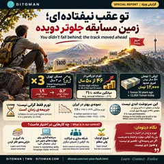

Zweistellige Inflation in 46 von 50 Jahren: warum Spätstarter weiter hinten stehen, warum das nicht ihre Schuld ist und was noch in unserer Hand liegt.
تورم دو رقمی در ۴۶ سال از ۵۰ سال: چرا دیر رسیدن گران است، چرا تقصیر تو نیست و چه چیزی هنوز در اختیار ماست.
Die Geschichte lesen

Was KI in fünf Bereichen in was verwandelt, warum Entwickler von KI-Systemen zu einer Branche werden und wo ein Unternehmer anfangen kann.
هوش مصنوعی در پنج حوزه چه چیزی را به چه تبدیل میکند و یک تاجر یا کارخانهدار ایرانی از کجا شروع کند.
Die Geschichte lesen
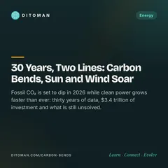
Fossiles CO₂ dürfte 2026 um 0,4 % sinken, während Solar und Wind 17,3 % des Weltstroms erreichen. Dreißig Jahre Daten und 3,4 Billionen Dollar Investitionen.
انتشار کربن فسیلی در ۲۰۲۶ کم میشود و خورشید و باد به ۱۷٫۳٪ برق جهان رسیدهاند؛ سی سال داده و ۳٫۴ تریلیون دلار سرمایهگذاری.
Die Geschichte lesen

Erwachsene kaufen inzwischen jedes fünfte Spielzeug. Fünfzig Jahre Spielzeug, warum Kinder es immer noch wollen, und Irans Chance, ein regionales Spielzeugzentrum zu werden.
بزرگسالها حالا یکپنجم خریداران اسباببازیاند؛ ۵۰ سال تاریخ اسباببازی و فرصت ایران در بازار منطقه.
Die Geschichte lesen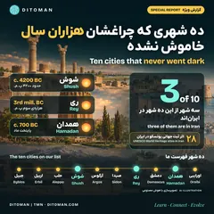

Susa, Rey und Hamadan gehören zu zehn antiken Städten, die bewohnt blieben und ihre Namen behielten, und sie verbinden Iran mit Syrien und dem Libanon.
شوش، ری و همدان در میان ده شهر کهنیاند که هزاران سال مسکونی ماندهاند و نامشان را نگه داشتهاند.
Die Geschichte lesen

40 % der britischen Kinder fragen KI um Geldrat: was sie fragen, wie genau die Antworten sind und wo der Iran und seine Nachbarn stehen.
۴۰٪ بچههای بریتانیایی سؤال پولی را از هوش مصنوعی میپرسند: چه میپرسند، جوابها چقدر درست است و ایران و همسایهها کجا هستند.
Die Geschichte lesen

Ökonomie hieß einst, einen Haushalt zu führen: wie Familien die Wirtschaft wirklich erleben, das iranische Haushaltsbudget in Zahlen und die Fähigkeiten, mit denen sie zurechtkommen.
اقتصاد از اول یعنی ادارهی خانه: دخل و خرج خانوار ایرانی با عدد و مهارتهایی که خانوادهها با آن از پس زندگی برمیآیند.
Die Geschichte lesen

8.112 Pflanzenarten, ein Jahrhundert Wandel, die Wirtschaft der Bäume und Pflanzen, der Iran neben seinen Nachbarn und 21 Unternehmen.
۸٬۱۱۲ گونهی گیاهی، صد سال تغییر، اقتصاد درخت و گیاه، مقایسه با همسایهها و ۲۱ شرکت.
Die Geschichte lesen

65 % der 18- bis 29-Jährigen lesen Nachrichten zuerst online, 2,5 % lesen oft gedruckte Zeitungen, und die Wirtschaft ist das meistgelesene Ressort.
۶۵٪ جوانها خبر را اول آنلاین میگیرند، ۲٫۵٪ اغلب روزنامهی کاغذی میخوانند و اقتصاد پرخوانندهترین صفحه است.
Die Geschichte lesen

Irans Fahrzeugbestand, fünfzig Jahre Herstellung und Import und der Vergleich mit der Türkei, Russland, Pakistan, Saudi-Arabien und dem Irak.
ناوگان ایران، ۵۰ سال تولید و واردات، و مقایسه با ترکیه، روسیه، پاکستان، عربستان و عراق.
Die Geschichte lesen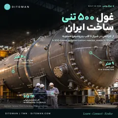
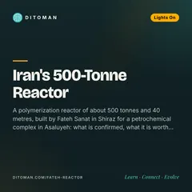
Ein 40 Meter langer Polymerisationsreaktor, gebaut in Schiras für einen Petrochemiekomplex in Asaluyeh, und die Firmen dahinter.
راکتور پلیمریزاسیون ۴۰ متری ساخت شیراز برای عسلویه، و شرکتهایی که پشت آناند.
Die Geschichte lesen

Fünfzig Jahre Bauen in Zahlen: fast sechsmal so viele Wohnungen, 52.000 Industriebetriebe, Platz sechs weltweit bei Zement.
۵۰ سال ساختن با عدد: خانهها نزدیک ۶ برابر، ۵۲ هزار واحد صنعتی، ششمِ جهان در سیمان.
Die Geschichte lesen
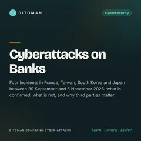
Frankreich, Taiwan, Südkorea und Japan: was bestätigt ist, was nicht und warum Dritte die Schwachstelle sind.
فرانسه، تایوان، کره و ژاپن: چه تأیید شده، چه نه، و چرا شرکتهای همکار حلقهی ضعیفاند.
Die Geschichte lesen

Eine Digitalbank mit 2,9 Mio. Kunden wurde unter Aufsicht gestellt, der Präsident abgesetzt, und was Einlagengarantien wirklich abdecken.
بانکی با ۲٫۹ میلیون مشتری بسته شد و رئیسجمهور برکنار شد؛ ضمانت سپرده واقعاً چه چیزی را پوشش میدهد؟
Die Geschichte lesen
Wer im Rennen ist, warum Quantentechnik mit KI und Kernkraft gleichzieht und was das für Verschlüsselung und Bitcoin bedeutet.
چه کشورهایی در این مسابقهاند و چه اثری بر رمزنگاری و بیتکوین دارد.
Die Geschichte lesen

The Economist sagt, KI habe Hackerangriffe befeuert. Die Belege, die Warnungen und was Verteidiger tun müssen.
شواهد، هشدارها و کاری که مدافعان باید بکنند.
Die Geschichte lesen

Bitcoin, Ether und USDT für Privatanleger nur über lizenzierte Vermittler, mit einer Obergrenze von 300.000 Rubel.
سه رمزارز برای مردم عادی، فقط از راه واسطههای مجاز و با سقف سالانه.
Die Geschichte lesen

Warum Erzeuger manchmal zahlen, um Strom zu verkaufen, und warum Ihre Rechnung nicht negativ wird.
چرا تولیدکننده برای فروش برق پول میدهد و چرا قبض تو منفی نمیشود.
Die Geschichte lesen

Ein Betrugsfall über 129 Mio. Dollar, angeblich mit geklonten Stimmen und Gesichtern, und drei Regeln zum Selbstschutz.
پروندهی ۱۲۹ میلیون دلاری با جعل صدا و تصویر، و سه قانون ساده برای محافظت.
Die Geschichte lesen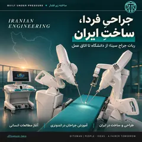

Ein iranischer Chirurgieroboter: was belegt ist und was noch Behauptung des Herstellers ist.
از دانشگاه تا اتاق عمل؛ آنچه مستند است و آنچه هنوز ادعای سازنده است.
Die Geschichte lesen

Ein iranisches KI-Sortiersystem trifft auf einen hundertjährigen Exporthandel.
سامانهی هوشمند غربالگری آفلاتوکسین و جایگاه پستهی ایران در جهان.
Die Geschichte lesen

Ausgehen wurde 20 % teurer als die Inflation, und doch gingen auch kostenlose Treffen zurück.
گرانی تنها مقصر نیست؛ حتی دورهمی رایگان هم کم شد.
Die Geschichte lesen

Eine einzige Lagerstätte in Yazd enthält etwa so viel Zink wie alle Reserven Perus.
ذخیرهای در دل کویر یزد، هماندازهی ذخایر روی کشور پرو.
Die Geschichte lesen

Ein im Iran hergestellter EO-Katalysator lässt die Glykolanlage von Morvarid Petrochemical jetzt mit voller Kapazität laufen.
کاتالیست ایرانی EO، واحد گلایکول پتروشیمی مروارید را با ظرفیت کامل میچرخاند.
Die Geschichte lesen

Wie CinnaGen die EU-Zulassung für Zandoriah erhielt.
داستان مجوز اروپایی داروی زاندوریا، ساخت سیناژن.
Die Geschichte lesen

Was es kann, wer es nutzen darf und was Iraner daraus lernen können.
چه میکند، چه کسانی از آن استفاده میکنند و چه درسی برای ما دارد.
Die Geschichte lesen۳۰ درس کوتاه و دوزبانه، قدمبهقدم: از پول و تورم تا بانک، بلاکچین و هوش مصنوعی.30 kurze Lektionen, Schritt für Schritt: von Geld und Inflation zu Banken, Blockchain und KI.
Eine dauerhafte redaktionelle Regel für alle drei: echtes Wissen und echte Leistung, keine politischen Kommentare von irgendeiner Seite.
Wie Blockchains funktionieren, wie man einen Token prüft, bevor man ihn anfasst, und wie man sich vor Betrug schützt.
Ehrliche Analyse der kommenden Veränderungen, gelesen von dort, wo unser Publikum wirklich steht.
Dokumentieren, was iranische Menschen und Unternehmen aufgebaut haben, mit einer Quelle für jede Zahl.
Eine strukturierte Karte dessen, was im Iran hergestellt, abgebaut, transportiert und gesehen wird: sechs Zweige, ihre offiziellen Unterzweige, die führenden Unternehmen und eine Quelle für jede Zahl.


Geschichte, Produkte, Führung und Zahlen, Branche für Branche, mit einer Quelle für jede Zahl.
Android-App-Store für Persischsprachige; über 500.000 Apps
فروشگاه برنامهی اندروید برای فارسیزبانان؛ بیش از ۵۰۰ هزار برنامه
Den Eintrag ansehenBiosimilars, Laborreagenzien und rekombinante Proteine
داروهای زیستیمشابه، معرفهای آزمایشگاهی و پروتئینهای نوترکیب
Den Eintrag ansehenIranischer Onlinehandel; seit 2006
بزرگترین فروشگاه اینترنتی ایران؛ از ۲۰۰۶
Den Eintrag ansehenASIC-, SoC- und FPGA-Design; der 32-Bit-Mikroprozessor Aristo
طراحی تراشهی ASIC، SoC و FPGA؛ ریزپردازندهی ۳۲ بیتی آریستو
Den Eintrag ansehenRobotisches Chirurgiesystem Sina
سامانهی جراحی رباتیک سینا
Den Eintrag ansehenFahrdienst mit Festpreisen; gestartet im Februar 2014
درخواست خودرو؛ قیمت از پیش مشخص؛ آغاز فوریهی ۲۰۱۴
Den Eintrag ansehenKraft- und Halbkraftpapier, Wellpappe und Kartons, Karton; Industriegebiet Yazd
کاغذ کرافت و سمیکرافت، ورق و کارتن کنگرهای، مقوا؛ شهرک صنعتی یزد
Den Eintrag ansehen
Einer der größten Ethylen- und Polyethylenhersteller Irans, in Asaluyeh, der über 70 % seiner Produktion exportiert
یکی از بزرگترین تولیدکنندگان اتیلن و پلیاتیلن ایران در عسلویه؛ بیش از ۷۰٪ محصول برای صادرات
Den Eintrag ansehenBeschichtete MDF-Platten und -Profile, PVC-Wandpaneele, Kunststein, Deckenplatten; Freihandelszone Anzali, Gilan
ورق و پروفیل امدیاف روکشدار، دیوارپوش پیویسی، سنگ مصنوعی و تایل سقفی؛ منطقه آزاد انزلی، گیلان
Den Eintrag ansehenPflanzliche Arzneimittel, Kosmetik, Lebensmittel und ätherische Öle; Kaschan, Isfahan (Werk nahe Qamsar)
داروی گیاهی، آرایشی و غذایی بر پایهی گیاهان دارویی؛ اسانس؛ کاشان، اصفهان (کارخانه نزدیک قمصر)
Den Eintrag ansehenZellstoff und Papier; Gilan
خمیر کاغذ و کاغذ؛ گیلان
Den Eintrag ansehenRosenwasser, Kräuterdestillate, natürliche Sirupe und getrocknete Kräuter; Industriestadt Amirkabir 1, Kashan
گلاب، عرقیات گیاهی، شربت طبیعی و گیاهان دارویی خشک؛ شهرک صنعتی امیرکبیر ۱، کاشان
Den Eintrag ansehen«بیسوادان قرن بیستویکم کسانی نیستند که نمیتوانند بخوانند؛ کسانیاند که نمیتوانند یاد بگیرند، از یاد ببرند و دوباره یاد بگیرند.»
„Die Analphabeten des 21. Jahrhunderts werden nicht die sein, die nicht lesen und schreiben können, sondern die, die nicht lernen, verlernen und neu lernen können.“
Ditoman ist nach dem Toman benannt, dem Alltagsnamen für iranisches Geld: ein „digitaler Toman“. TMN wurde im Februar 2022 auf der BNB Smart Chain bereitgestellt, mit einer Frage dahinter: Kann Wissen selbst echten Wert tragen?
Fast vier Jahre lang blieben wir bewusst still. Kein Marketing, kein Token-Verkauf, kein Launch. Diese Geschichte steht für jeden prüfbar auf der Chain und ist das deutlichste Zeichen, dass dies nie für einen schnellen Pump gebaut wurde.
Kurze Lektionen nach Thema, je etwa fünf Minuten, in beiden Sprachen, jede mit einem Quiz am Ende.


Digitale Zentralbankwährungen und programmierbares Geld: was real ist, was übertrieben ist und wo Irans digitaler Rial steht.
Die Lektion lesenLektionen, kurze Nachrichtenerklärungen und Updates, auf Persisch und Englisch. Keine Signale, kein Hype.
TMN ist der BEP-20-Token hinter Ditoman, gedacht zur Anerkennung echten Lernens und Beitragens. Er ist kein Anlageprodukt, und wir bitten niemanden, ihn zu kaufen.
Mehrere nicht verwandte Tokens nutzen das Kürzel TMN. Dies ist der einzige offizielle Vertrag:
0x86a56e59f22Eaf3867EEeB41fB9BfA81BacE790d
نقطهضعفها را هم مینویسیم، چون درس بررسی توکن یاد میدهد دنبالشان بگردی.
Phasen, keine Termine. Wir berichten ehrlich über den Fortschritt, auch über das, was nicht funktioniert hat.
Vertrag verifiziert, Eigentum aufgegeben, rund 20 % des Angebots außer Umlauf, zweisprachige Lektionen veröffentlicht, Whitepaper final.
Eine Telegram-Community mit echten Regeln, Startlektionen und klarem Einstieg, noch vor jeder Einladung.
29. Okt. 2026: die gesamte TMN/BNB-Liquidität der Haupt-Wallet des Projekts bis 29. Okt. 2027 gesperrt. Die Sperre prüfen · Was es bedeutet
۷ آبان ۱۴۰۵: همهی لیکوئیدیتی TMN/BNB کیفپول اصلی پروژه تا ۷ آبان ۱۴۰۶ قفل شد.
Beitritt zu persischsprachigen Krypto- und Diaspora-Communities und die erste öffentliche Angebotsentnahme mit Nachweis.
Lesen Sie zehn Lektionen, bestehen Sie einen Test mit zehn Fragen und erhalten Sie 500.000 TMN, für die ersten 1.000 Personen. Hier starten.
ده درس را بخوان، در آزمون دهسؤالی قبول شو و ۵۰۰٬۰۰۰ TMN بگیر؛ برای ۱٬۰۰۰ نفر اول. از اینجا شروع کن.
Ein zweisprachiges Bildungsprojekt mit drei Säulen: praktisches Krypto- und Finanzwissen, ehrliche Analyse von KI, Energie und der Zukunft der Arbeit sowie Berichte über echte Leistungen iranischer Menschen und Unternehmen.
از کسی نمیخواهیم بخرد. عرضهی TMN متمرکز است. صفحهی TMN را بخوان و با همان معیارهایی بسنجش که هر توکن دیگری را میسنجی.
Nein. Ditoman ist ein Bildungsprojekt. Nichts hier ist Anlageberatung, und die Lektionen sollen Ihnen helfen, selbst zu entscheiden.
Das ist eine dauerhafte redaktionelle Regel. Wir dokumentieren echtes Wissen und echte Leistungen und halten uns aus politischen Kommentaren jeder Seite heraus.
Ja. Das Pilotprogramm „Lernen und verdienen“ ist offen: Lesen Sie zehn Lektionen, bestehen Sie einen Test mit zehn Fragen und erhalten Sie 500.000 TMN, für die ersten 1.000 Personen. Hier starten.
بله. طرح «یاد بگیر، توکن بگیر» باز است: ده درس را بخوان، در آزمون دهسؤالی قبول شو و ۵۰۰٬۰۰۰ TMN بگیر؛ برای ۱٬۰۰۰ نفر اول. از اینجا شروع کن.
Ein Dokument gibt die Richtung vor. Lesen Sie es, bevor Sie irgendetwas glauben, was wir sagen.
گزارشها، آموزشها و روایتهای امیدبخش، هر روز در کانالهای دیتومان.